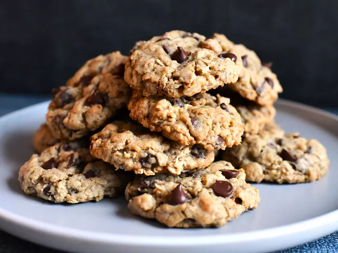

Chocolate Chip Oatmeal Cookies

Description
These delicious chocolate chip oatmeal cookies are always a family favorite!
Ingredients
- 1 cup butter, softened
- 1 ¼ cups packed brown sugar
- ½ cup white sugar
- 2 eggs
- 2 tablespoons milk
- 1 teaspoon vanilla extract
- 1 ¾ cups all-purpose flour
- 1 teaspoon baking soda
- ½ teaspoon salt
- 2 ½ cups rolled oats
- 2 cups semisweet chocolate chips
- 1 cup chopped walnuts
Steps
- Preheat oven to 375 degrees F (190 degrees C).
- Beat together margarine and sugars until creamy. Add eggs, milk, and vanilla; beat well. Add combined flour,
baking soda, and salt; mix well. Stir in oats, chocolate chips, and nuts; mix well.
- Drop rounded tablespoonfuls onto ungreased cookie sheet. Bake 9 to 10 minutes. Cool for 1 minute on cookie
sheet; remove to wire rack.
- To make bar cookies out of this chocolate chip oatmeal cookie recipe, press dough onto the bottom of a
13X9-inch baking pan. Bake 30-35 minutes.